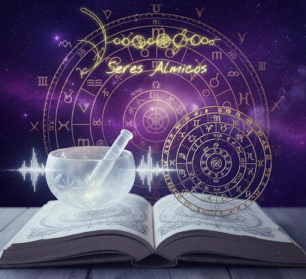

Un espacio para encontrar la congruencia entre tu historia y tu presente, despejando el camino para que logres, finalmente, descubrir la verdadera sonoridad de tu voz.
Explorar servicios
No creo en las etiquetas ni en diagnósticos que sentencian. Mucho menos en recetas mágicas. Sí, creo en la escucha activa, en la empatía y en la aceptación incondicional. Sí, creo por sobre todo en el poder que cada ser tiene para transformarse cuando encuentra el espacio adecuado.
Soy Cynthia Pawelek y mi camino ha sido una búsqueda constante por integrar mundos que parecían ajenos: las Relaciones Internacionales, la Escritura Creativa, el poder sagrado del sonido, el lenguaje simbólico de la astrología evolutiva y la humanidad del Counseling.
En esa integración encontré mi propio lenguaje: una mirada terapéutica que utiliza la memoria emotiva y la consciencia de la meditación como puertas de entrada a lo profundo, para que puedas encontrar las respuestas dentro tuyo. Mi pasión por la energía del cielo, especialmente en la fuerza de la Luna y de Lilith, es la brújula que completa mi abordaje.
Mi propósito es acompañarte a encontrar la congruencia entre tu historia pasada y tu presente, para que lo que pienses, sientas y digas tenga un solo sentido.
De esa misma búsqueda de identidad nació mi pulso por la ficción: una narrativa inspirada en voces de mujeres que buscan sus propias respuestas.
Es una invitación a que vos también descubras la sonoridad de tu voz.
Cada propuesta surge de años de trabajo integrado. No son fórmulas: son espacios diseñados para lo que realmente necesitás.
Exploramos tu Carta Natal como un territorio de múltiples sentidos. Buscamos entender tu diseño original de forma integral: desde tus planetas hasta la fuerza de tu Luna, tu Lilith y el camino de tus Nodos Lunares.
Un espacio de escucha activa y aceptación incondicional. Aquí buscamos la congruencia entre lo que tu mapa dice y lo que tu Ser necesita experimentar aquí y ahora.
Donde las palabras no llegan, llega la vibración. Utilizamos el sonido para limpiar el ruido externo, conectar con tu frecuencia más honesta y abrir puertas a la memoria emotiva.
A través de la meditación consciente/guiada creamos el silencio necesario para que las respuestas que ya habitan en vos logren salir a la luz.
Le damos forma a lo descubierto a través del relato. Integramos tu pasado con tu presente para que seas vos quien narre, con autoridad, la nueva versión de tu propia historia.
Mi espacio más personal, donde integro todas mis herramientas de forma artesanal. Un encuentro genuino para descubrir tu verdadero Ser Álmico a través de la unión del sonido, el símbolo y la palabra.
Llegué en un momento de mucha confusión y sin saber muy bien qué buscar. El proceso me ayudó a ver patrones que venía arrastrando hace años, con una claridad que no había encontrado en ningún otro espacio.
Conocer mi carta natal fue profundamente terapéutica. No fue sobre predicciones sino sobre comprenderme. Me llevó semanas integrar todo lo que surgió en esa sesión. Muy transformador.
Lo que más me sorprendió fue la calidad de presencia. No juzga, no apura, no impone. Simplemente acompaña. Y eso, en un proceso vulnerable, lo es todo.
Completá el formulario y me comunico en las próximas 48 horas. Si tenés dudas sobre qué servicio te conviene, podemos explorar eso juntas en una conversación inicial.